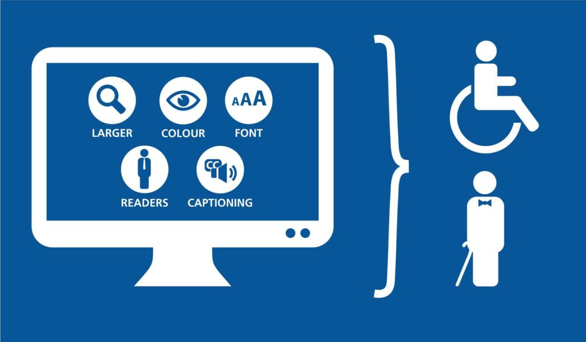
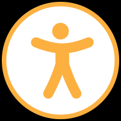

Writer – Michelle Lagos CEO
- Title III of the Americans with Disabilities Act is being interpreted to include websites as “places of public accommodation”
- Websites with significant inaccessible components can be seen as discriminatory against persons with disabilities, in violation of Title III of the ADA
- The ADA is a strict liability law which means there are no excuses/defenses for violations (e.g. ignorance, web developer is working on it, etc.)
- No current legal prescription exists for web accessibility but WCAG 2.0 AA has been commonly referenced as a guide
- Newly published Web Accessibility Standards (WAS) make accessibility easier
- Be aware ADA lawsuits have been on the upswing in 2018 – 2021 but so is the general concern for all-ability persons to access general and pivotal resources that they may be without, if these details and concerns were overlooked.
ADA website compliance vs. website accessibility.
The law that primarily governs accessibility is The Americans with Disabilities Act (ADA). Even though it doesn’t mention websites anywhere, Title III of the ADA has been been interpreted by U.S. courts to apply to websites.
For websites to be ADA compliant, they need to be accessible.
Main questions:
Understand that the ADA is the legal side and their primary questions are: 1) Are you in compliance with the law? How well can persons with disabilities access your website?
Your next question SHOULD be: How do we make our websites accessible?
The answer is to make it so people with disabilities can enjoy the full use of your website; they can access content, navigate your website successfully, engage with different elements, etc. while it stays in compliance.
Tips:
– Start by adding alt text to every meaningful image on your website, starting with the most trafficked areas of your website.
– After that, your best option is continue on with the bullet points in the newly published Web Accessibility Standards (WAS) from Accessible.org:
Web Accessibility Standards PDF (dark background)
Web Accessibility Standards PDF (white background)
- Not required legally but something to remember, be progressive, and stay as gender-neutral as possible with content additions and edits.
– Another big ticket item is having closed captioning on your videos. If you have your videos hosted on YouTube, adding closed captions is fairly easy to do.
Remember in this process you don’t have to specifically make your website accessible one exact way, but you do need to make it accessible.

Web Accessibility Standards (WAS) Preview
Here’s a skeleton outline of WAS:
Website Presentation
- Descriptive text
- Nested headings
- Color alone does not convey meaning
- Clear forms
- Uniform labels
- Clean code
Website Appearance
- Zoom text
- Color contrast ratio
- Distinctive links
- Consistent layout and navigation
Content Alternatives
- Descriptive alt text
- No images of text
- Text transcripts
- Closed captioning
- Table data
- Extraneous documents
User Control
- No automatic pop-ups
- No automatic video or audio
- No unexpected changes
- Pause updating/refreshing content
- Adjust time limits
- Important submissions
Website Usability
- Keyboard only
- Focus indicator
- Skip navigation
- Search function
- Sitemap
- Language
Here is the full web page version of WAS.
Reference:
U.S. courts and the Department of Justice (DOJ) have frequently referenced the Web Content Accessibility Guidelines (WCAG) 2.0 Level AA success criteria as a standard to gauge whether websites are accessible. The WCAG 2.0 AA success criteria are comprised of 38 requirements, individually referred to as success criterion.
Checkout the WCAG 2.0 AA success criteria to see how bad it gets.
WAS is newly published (June 2019) and incorporates most of the fundamental principles of WCAG but is easier and simpler to deal with.
What makes a website ADA compliant is an unsettled matter of law but Assistant Attorney General, Stephen E. Boyd, has stated in a letter of Congress that entities (almost all of us — individuals, businesses, companies, organizations, etc.) have flexibility in how to comply with web accessibility.